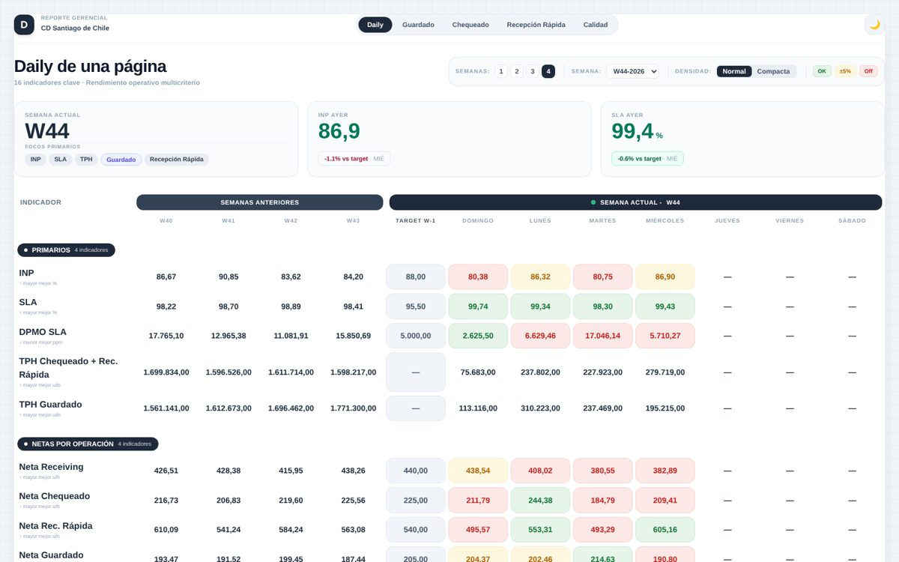

Destacado
Daily de una página · Reporte gerencial
Todos los KPIs de la operación inbound en un solo lugar: la semana actual día a día, contra las 4 semanas anteriores y el target, con semáforo automático.
- 16 indicadores: productividad, SLA, netas por proceso, asistencia y calidad (DPMO, contact rate)
- Un solo disparo diario: 8 consultas se calculan y publican solas cada mañana
- Cascada de palancas que explica qué sube o baja la productividad
BigQuery SQLn8nJavaScriptTailwind CSS
Ver demo
Código privado · disponible a pedido